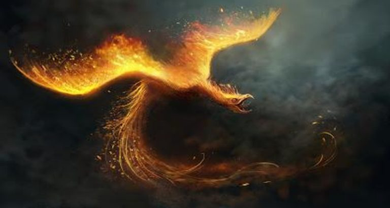

O famoso Monte Moxuara está localizado no município de Cariacica, e fica a cerca de vinte quilômetros da capital do estado. É uma formação de granito com mais de 720 metros.
Uma visão a partir da Ilha das Caieiras em Vitória.
O nome foi herdado de duas possíveis fontes, ou por incrível que possa parecer pode ser das duas. A primeira diz que o nome surgiu de uma expressão francesa: Mouchoir! Que significa lenço.
Subida ao monte.
Já a segunda versão, conta-se que os nativos "abrasileiraram" o nome falando: Moxuara! O significado é "Pedra Irmã" na língua dos nativos que habitavam por essas redondezas.
Fim de tarde visto da capital Vitória.
A Lenda do Pássado de Fogo
Fim de tarde visto da capital Vitória.
O Pássaro de Fogo é uma das figuras mais famosas do folclore cariaciquense. Sua lenda lembra a origem de Rudá, o Deus Tupi do Amor, que havia surgido para ser o mensageiro entre o sol e lua, assim como para despertar o amor no coração das mulheres.
Segundo a lenda, onde hoje se situam as cidades de Cariacica e Serra, viviam duas tribos rivais. O chefe da tribo que habitava Cariacica teve uma filha lindíssima e essa princesa veio a se apaixonar por um valente guerreiro da tribo rival.
Dos céus, uma ave fantástica via o sofrimento do casal e seu amor proibido. Decidido a ajudar, o enorme pássaro levava a princesa índia até o encontro de seu amado, mas mesmo com a ajuda sobrenatural os jovens foram descobertos. Irado, o chefe da tribo pediu a um poderoso xamã que fizesse um feitiço para que os amantes jamais se encontrassem de novo. Assim o velho curandeiro implorou tal provisão aos deuses, que foram extremamente severos e prenderam os dois jovens amantes em prisões de pedra. Dessa forma, a princesa transformou-se no Monte Mochuara (localizado no Cariacica) e o guerreiro no Monte Mestre Álvaro (localizado no município da Serra), ambos condenados a estar um de frente ao outro pela eternidade, mas sem se tocarem ou se falarem.
Talvez por arrependimento das tribos ou dos Deuses, os espíritos que habitavam as florestas do Mochuara fizeram outro encanto. Uma vez por ano os jovens amantes se libertariam de sua prisão de pedra e o pássaro encantado lhes serviria por mensageiro. A ave fantástica se converteu em fogo e no dia 24 de junho é possível comemora-se o dia em que o pássaro de fogo rasga os céus, levando as eternas promessas de amor da princesa e do guerreiro.